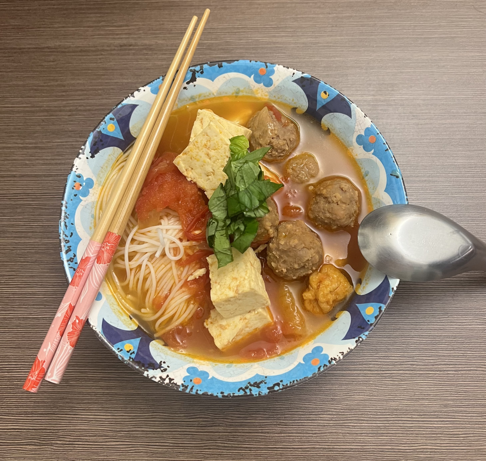

1 large sweet onion cut into large crescent slices
6 smashed garlic cloves
pineapple chunks cut into 1 inch cubes
pineapple core
optional
3 cups chicken broth or stock
2 cups pineapple juice
3 tbsp tamarind powder
3 tbsp bouillion powder
4 tbsp vietnamese fish sauce
Meatballs
1 shallot
2 cloves garlic
1/8 lb raw shrimp
shells removed, de-veined
2/3 lb ground pork
1 egg
2 tbsp fish sauce
Other Topping Suggestions
12oz silk or fried tofu
Thai basil
Green onion
Bean sprouts
To Serve:
Three Ladies rice vermicelli for thin noodles
Fresh Pad Thai noodle for thick noodles

Directions:
Sear tomatoes, onion, garlic, and pineapple chunks in a
large pot with some olive oil. Sear for about 5 minutes.
Add the broth/stock, pineapple juice, pineapple core if using,
and the rest of the seasoning. Bring to a boil.
Once boiling, reduce heat and simmer for at least 2 hours.
Place all meatball ingredients into a food processor, and
pulse about five times or until thoroughly combined.
30 minutes before eating, bring broth up to a boil. Drop
a dollop of the meatball mixture directly into the soup.
Allow to cook. Meatballs should be fully cooked when they
float to the surface. Add tofu at this point if using.
Allow to simmer for at least 5 minutes before eating.
Prepare rice vermicelli according to package instructions.
Be sure to rinse noodles in cold water after cooking.
Pour soup over noodles, top with basil, green onion, and bean sprouts.